Do osteócito ao esqueleto inteiro.
Tudo o que caiu nas conferências, nas práticas de laboratório e nas suas anotações, reorganizado em uma sequência lógica: primeiro a célula, depois o tecido, depois a articulação, por fim cada osso do animal.
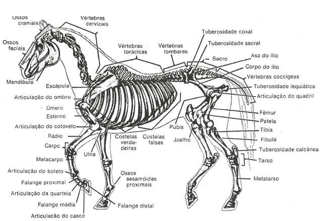
A frase em destaque no início resume o capítulo inteiro. Se você souber explicá-la, entendeu.
Os quadros rosa mostram o que mais derruba na prova, inclusive erros que estavam nas anotações.
Cada capítulo fecha com um quiz que corrige na hora e explica o porquê.
No fim, 20 questões sorteadas valendo nota. Repita até tirar 10 três vezes seguidas.
Esqueleto: o mapa antes da viagem
O esqueleto é uma armação de ossos vivos, dividida em axial, apendicular e visceral, que protege, sustenta e permite a locomoção.
Você precisa saber
- As 3 funções e as 3 divisões do esqueleto (com exemplos do visceral).
- As partes de um osso longo: diáfise, metáfise, epífise, periósteo, endósteo, medula.
- Classificar um osso pela forma (longo, plano, curto, irregular).
- O vocabulário dos acidentes ósseos: côndilo, tuberosidade, forame, fossa…
- As fórmulas vertebrais por espécie.
1.1O que é o esqueleto
É a armação de estruturas duras (ossos) que suporta e protege os tecidos moles do animal. Corresponde a cerca de 20% do peso corporal e é formado por três componentes: ossos, cartilagens (reduzem o atrito entre os ossos) e ligamentos (unem um osso ao outro). O estudo das articulações se chama sindesmologia.
Proteção
Crânio guarda o encéfalo, costelas guardam coração e pulmões, coluna guarda a medula espinhal.
Sustentação
Apoio para o corpo e para as partes moles; ponto de inserção dos músculos.
Locomoção
Os ossos longos funcionam como alavancas movidas pelos músculos.
A histologia acrescenta mais três: reserva de minerais (cálcio, fosfato), hematopoiese (o osso aloja e protege a medula óssea) e conformação do corpo.
1.2As três divisões
- Crânio (e mandíbula)
- Coluna vertebral
- Costelas
- Esterno
- Membros torácicos
- Membros pélvicos
- Cíngulos (escapular e pélvico), que prendem os membros ao tronco
- Ossos que se desenvolvem dentro de vísceras e não se articulam com o resto do esqueleto
- Osso peniano (cão, gato)
- Osso do coração (bovino, na base da valva aórtica)
- Osso rostral (suíno, no focinho que ele usa para fuçar)
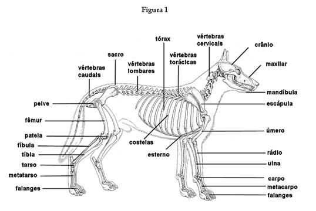
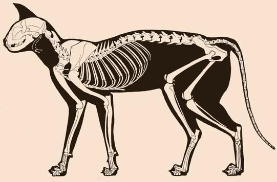
O osso hioide aparece em alguns slides como exemplo de esqueleto visceral. Se a questão perguntar “ossos inseridos em tecidos moles que não se articulam com o esqueleto”, a resposta é visceral (esplâncnico), nunca axial.
1.3O osso é um órgão vivo
Osso não é pedra: tem vasos sanguíneos, linfáticos e nervos, responde a estímulos mecânicos e hormonais, e 5 a 7% da massa óssea é reciclada a cada ano. Por dentro, todo osso tem substância compacta, substância esponjosa e (nos longos) cavidade medular.
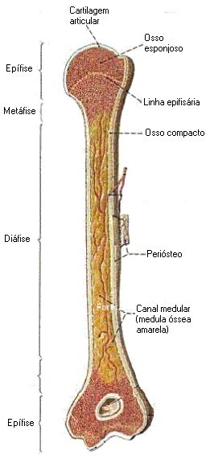
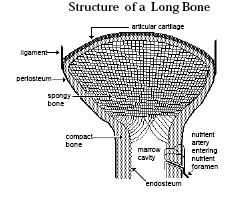
| Parte | Como é | O que guardar |
|---|---|---|
| Córtex (osso compacto) | Osso maciço; espesso na diáfise, delgado nas epífises | Superfície lisa com depressões e relevos (os acidentes ósseos) |
| Osso esponjoso | Trabéculas com espaços, predominante nas epífises | Os espaços abrigam a medula vermelha |
| Cavidade medular | Canal no centro da diáfise | No adulto guarda a medula amarela (gordura) |
| Cartilagem articular | Cartilagem hialina lisa, não uniforme | A camada mais profunda é calcificada; não tem pericôndrio |
| Periósteo | Membrana fibrosa, alta celularidade | Capaz de formar osso: essencial para consolidar fraturas |
| Endósteo | Membrana fina que reveste a cavidade medular e as trabéculas | Também fornece células formadoras de osso |
Medula óssea
Vermelha
No osso esponjoso (epífises) e, em animais jovens, também na diáfise. Forma eritrócitos, leucócitos e megacariócitos (que originam as plaquetas).
Amarela
Na diáfise dos ossos longos do adulto. Tecido conjuntivo rico em células adiposas.
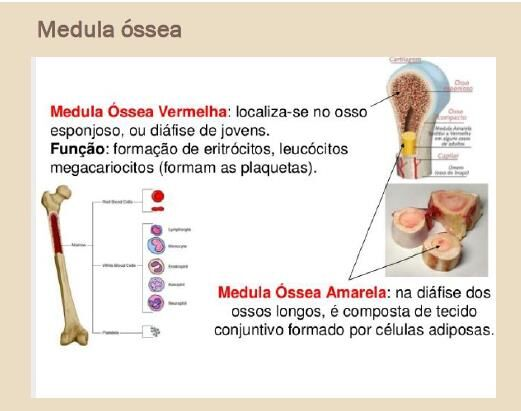
Suprimento sanguíneo
Os ossos recebem cerca de 10% do débito cardíaco (DC). A principal fonte é a artéria nutrícia, que entra pelo forame nutrício (cada osso tem o seu) e leva nutrientes para dentro do osso. Vasos do periósteo completam a irrigação.
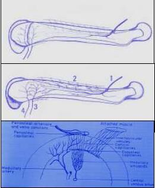
1.4Classificação dos ossos pela forma
| Tipo | Forma | Função | Exemplos |
|---|---|---|---|
| Longo | Cilíndrico, alongado, extremidades alargadas; tem diáfise, metáfise e epífise | Suporte e alavanca | Úmero, fêmur, rádio, tíbia, metacarpos |
| Plano | Expandido em duas direções | Inserção muscular e proteção de órgãos | Escápula, ossos da calota craniana, coxal |
| Curto | Comprimento ≈ largura ≈ espessura | Difusão da concussão (amortecem o impacto) | Carpo, tarso, sesamoides |
| Irregular (remanescente) | Formato irregular | Funções variadas | Vértebras, ossos da base do crânio |
Osso curto: centro esponjoso coberto por compacto. Osso plano: duas lâminas compactas com esponjoso no meio, o díploe. Osso longo: tubo compacto com esponjoso nas pontas.
1.5Dicionário dos acidentes ósseos
Esses termos aparecem em todas as listas de identificação. Se você souber o que cada um significa, consegue até chutar a localização de uma estrutura que nunca viu.
| Termo | Significado | Exemplo |
|---|---|---|
| Tuberosidade / tubérculo | Protuberância de superfície rugosa onde se prendem músculos, ligamentos ou tendões | Tuberosidade deltoide do úmero |
| Côndilo | Superfície articular arredondada | Côndilos do occipital, do fêmur |
| Epicôndilo | Região próxima ao côndilo onde se inserem os ligamentos colaterais | Epicôndilo medial do úmero |
| Processo | Proeminência, em geral para inserção de músculos ou tendões | Processo espinhoso da vértebra |
| Crista | Margem óssea de borda fina | Crista ilíaca, crista facial |
| Cabeça / colo | Superfície articular quase esférica, apoiada numa região estreita (colo) | Cabeça do fêmur |
| Forame | Orifício por onde entram ou saem nervos e vasos | Forame magno, forame nutrício |
| Fossa / fóvea | Depressão arredondada, de profundidade variada (fóvea é pequena) | Fossa do olécrano, fóvea da cabeça do fêmur |
| Sulco | Depressão por onde passam nervos, vasos ou tendões | Sulco intertubercular |
| Meato | Espaço formado por margens ósseas | Meatos nasais |
| Face | Superfície lisa, plana ou arredondada, articular ou não | Face auricular do sacro |
| Incisura | Chanfradura ou entalhe na borda do osso | Incisura troclear da ulna |
| Tróclea | Superfície articular em forma de roldana | Tróclea do fêmur, do úmero |
| Trocânter | Grande processo, exclusivo do fêmur | Trocânter maior |
Superfície lisa = articula com outro osso. Superfície rugosa = prende músculo, tendão ou ligamento.
1.6Coluna vertebral: as fórmulas
A coluna é um conjunto de vértebras (ossos irregulares, ímpares e semelhantes entre si) dividido em 5 regiões: cervical (C), torácica (T), lombar (L), sacral (S) e caudal ou coccígea (Ca). O número varia com a espécie; o cão tem 50 a 53 vértebras.
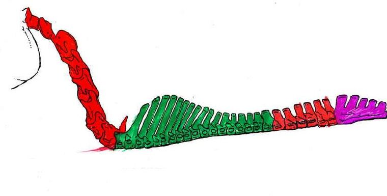
| Espécie | C | T | L | S | Ca |
|---|---|---|---|---|---|
| Equino | 7 | 18 | 6 | 5 | 15–21 |
| Bovino | 7 | 13 | 6 | 5 | 18–20 |
| Carnívoros (cão e gato) | 7 | 13 | 7 | 3 | 20–23 |
| Suíno | 7 | 14–15 | 6–7 | 4 | 20–23 |
- Cervicais = 7 em todos. Nunca muda entre os domésticos.
- Cavalo é o campeão de torácicas: 18 (e portanto 18 pares de costelas).
- Carnívoro: 13-7-3 — mais lombares (7) e menos sacrais (3) que os herbívoros.
- Grandes herbívoros (equino e bovino): L6 S5.
1.7Por que isso importa: o caso clínico
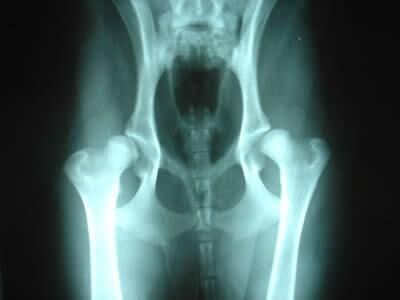
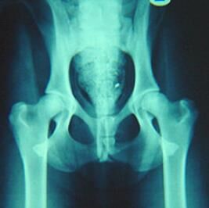
Só dá para reconhecer a displasia coxofemoral na radiografia se você souber como são o acetábulo, a cabeça e o colo do fêmur normais. A anatomia é a base do diagnóstico por imagem.
Tecido ósseo: quem constrói, quem mantém, quem destrói
O osso é tecido conjuntivo especial com matriz mineralizada, mantido em equilíbrio por três células: o osteoblasto constrói, o osteócito mantém e o osteoclasto reabsorve.
Você precisa saber
- Descrever as células do tecido ósseo e o papel de cada uma.
- Os componentes da matriz óssea (orgânica × inorgânica).
- Explicar histologicamente o periósteo e o endósteo.
- Comparar ossificação intramembranosa e endocondral.
- Osso primário × secundário; sistema de Havers e canais de Volkmann.
- Reconhecer tudo isso na lâmina.
2.1Um tecido conjuntivo especial e dinâmico
O tecido ósseo é uma forma especializada de tecido conjuntivo. Ele combina uma fase mineral (cristais de fosfato de cálcio na forma de hidroxiapatita) com uma matriz colagênica organizada. Essa mistura o deixa muito resistente às solicitações mecânicas.
| Tecidos conjuntivos | Exemplos | |
|---|---|---|
| Propriamente ditos | Frouxo | Endósteo |
| Denso (modelado e não modelado) | Periósteo, pericôndrio, tendões | |
| Especiais | Cartilaginoso, ósseo, adiposo, sanguíneo | Osso, cartilagens, gordura, sangue |
É também um tecido dinâmico: ele se remodela o tempo todo conforme a carga. O exemplo clássico é o aparelho ortodôntico. Do lado em que o dente faz pressão, o osso é reabsorvido; do lado em que há tensão, osso novo é formado. Assim o dente “anda”.
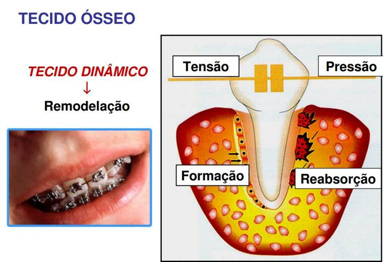
Funções do tecido ósseo
- Principal constituinte do esqueleto; suporte para as partes moles.
- Proteção de órgãos vitais; aloja e protege a medula óssea.
- Sistema de alavancas para os músculos.
- Depósito de cálcio, fosfato e outros íons (liga este capítulo ao capítulo 3).
2.2Os constituintes
Pense no osso como uma cidade: tem moradores (as células), prédios (a matriz calcificada) e muros (periósteo por fora e endósteo por dentro).
- Células: osteoprogenitoras, osteoblastos, osteócitos e osteoclastos.
- Matriz óssea: material extracelular calcificado.
- Membranas conjuntivas: periósteo (externa) e endósteo (interna).
2.3As quatro células
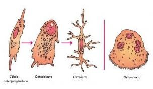
Osteoprogenitora
Células achatadas, alongadas, com poucas organelas, derivadas do mesênquima embrionário. Revestem o osso (periósteo e endósteo) e são difíceis de ver; confundem-se com osteoblasto inativo. Quando o osso precisa ser formado, dividem-se por mitose e originam osteoblastos. Fora disso, ficam como reserva.
Osteoblasto
Sintetiza a parte orgânica da matriz (colágeno tipo I, proteoglicanas e glicoproteínas) e concentra fosfato de cálcio. Fica na superfície do osso, enfileirado como um epitélio simples (de cúbico, quando ativo, a achatado, quando inativo).
Osteócito
É o osteoblasto que ficou preso na matriz que produziu. Mora numa lacuna e conversa com os vizinhos por prolongamentos dentro de canalículos. Pouco retículo endoplasmático rugoso, Golgi pequeno, cromatina condensada. Função: manutenção da matriz.
Osteoclasto
Célula móvel, gigante e multinucleada (6 a 50 núcleos), originada da fusão de monócitos do sangue. Fica em escavações chamadas lacunas de Howship e dissolve a matriz óssea (reabsorção).
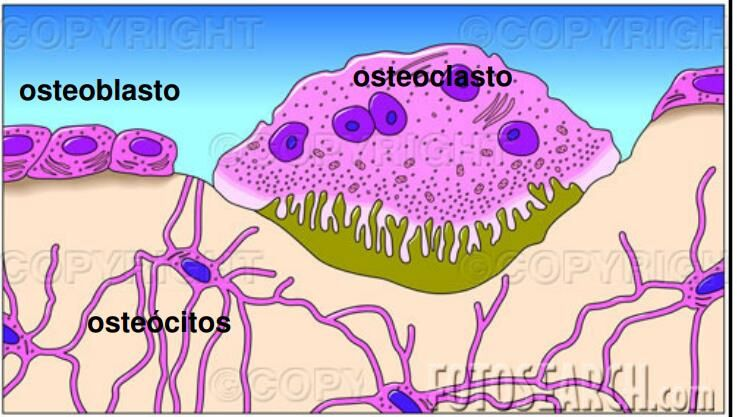
OsteoBlasto = Bota osso (constrói). OsteoClasto = Come osso (reabsorve). OsteóCito = Cuida do osso (mantém).
Como reconhecer na lâmina
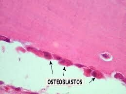
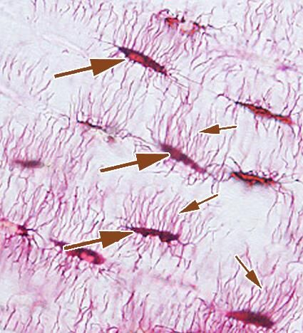
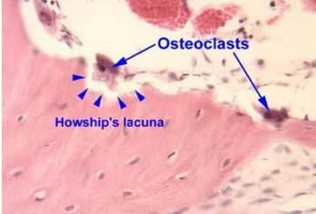
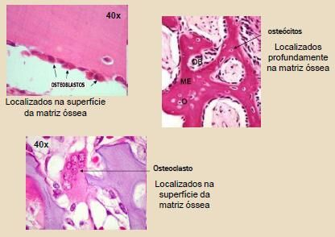
Pergunte-se “onde a célula está?”. Dentro da matriz, numa lacuna = osteócito. Na borda, enfileirada = osteoblasto. Na borda, gigante e com vários núcleos, numa cavidade = osteoclasto. Osteoclastos jovens coram mais pela eosina (rosa); os maduros pela hematoxilina (roxo).
O osteoclasto vem dos monócitos do sangue e por isso é aparentado aos macrófagos. Mas a função dele não é defesa: é reabsorver matriz óssea. Se a prova pedir função, responda “dissolve/reabsorve a matriz”.
O ciclo de remodelação
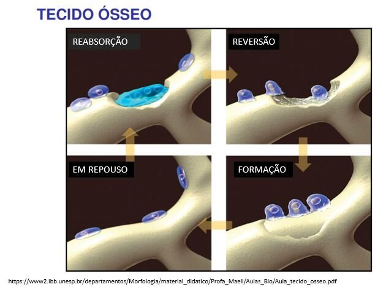
2.4A matriz óssea
Matriz orgânica
Produzida pelo osteoblasto. ~95% colágeno tipo I + proteoglicanos + proteínas não colagenosas (osteocalcina, osteopontina, osteonectina, sialoproteína). Dá elasticidade. É a “parte mole”.
Matriz inorgânica
Cristais de hidroxiapatita [Ca₁₀(PO₄)₆(OH)₂] com íons associados: bicarbonato, citrato, magnésio, sódio e potássio. Dá rigidez. É a “parte dura”.
Colágeno = flexibilidade. Mineral = dureza. Um osso descalcificado (sem mineral) dobra como borracha; é assim que se preparam lâminas de osso para cortar no micrótomo.
As porcentagens variam um pouco entre os slides (30/70 e 35/65). Em qualquer caso, a inorgânica é maior. Se a alternativa disser que a orgânica predomina, está errada.
Osteoide: a matriz recém-feita
Osteoide é a matriz óssea neoformada, ainda não calcificada, logo ao lado dos osteoblastos. É rica em colágeno e dá a estrutura inicial para a formação do osso. Depois, ela se mineraliza.
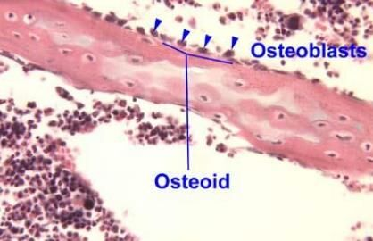
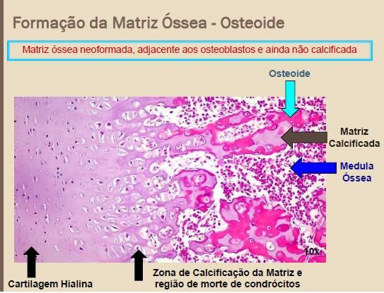
2.5Periósteo e endósteo
As duas membranas têm a mesma função: nutrir o tecido ósseo e fornecer novos osteoblastos para o crescimento em espessura e a recuperação de fraturas.
| Periósteo | Endósteo | |
|---|---|---|
| Onde | Reveste o osso por fora (exceto nas superfícies articulares) | Reveste por dentro: canal medular e trabéculas |
| Tecido | Conjuntivo denso | Conjuntivo frouxo |
| Camadas | Externa fibrosa (fibras colágenas); interna celular (osteoprogenitoras, osteoblastos) | Camada fina de células osteoprogenitoras |
| Extras | Tem nervos e vasos; ponto de fixação de músculos (fibras de Sharpey) | — |
Em uma das suas anotações está “parte interna rica em fibras, parte externa rica em osteoprogenitoras”. É o contrário: externa = fibrosa; interna = osteogênica (celular). Faz sentido: as células precisam estar encostadas no osso para formá-lo.
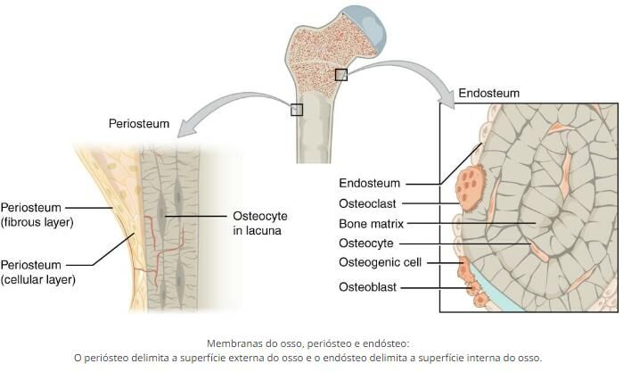
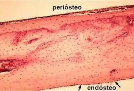
2.6Tipos de tecido ósseo
Visão macroscópica: compacto × esponjoso
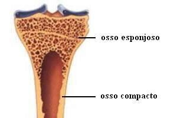
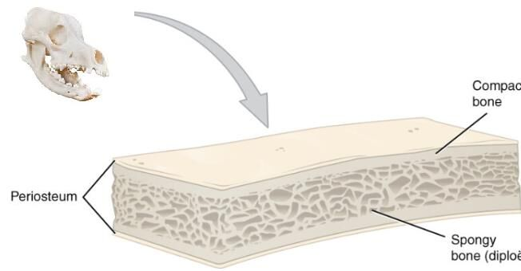
Esponjoso tem “furinhos”, e dentro dos furinhos fica a medula óssea hematopoética. Compacto é a parede lisa e densa.
Visão microscópica: primário × secundário
| Primário (imaturo, não lamelar) | Secundário (maduro, lamelar) | |
|---|---|---|
| Fibras colágenas | Em várias direções, desorganizadas | Organizadas em lamelas paralelas ou concêntricas ao redor de um vaso (sistema de Havers) |
| Mineral | Pouco mineralizado | Bem mineralizado |
| Osteócitos | Mais osteócitos | Menos; ficam entre as lamelas ou dentro delas |
| Quando aparece | Primeiro no embrião e na reparação de fraturas. É temporário: depois é substituído pelo secundário | Predomina no adulto, principalmente na diáfise dos ossos longos |
| No adulto | Persiste nas suturas do crânio, alvéolos dentários e algumas inserções de tendões | Quase todo o resto |
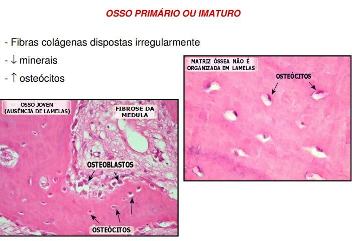
Sistema de Havers e canais de Volkmann
No osso secundário, as lamelas se organizam em cilindros chamados ósteons (sistemas de Havers): lamelas concêntricas de colágeno envolvendo um canal de Havers, que leva vasos e nervos paralelos ao comprimento do osso. Os canais de Volkmann atravessam o osso transversalmente e ligam os canais de Havers entre si, ao periósteo e à cavidade medular. Lamelas que separam os ósteons são unidas por substância cimentante (matriz mineralizada pobre em colágeno).
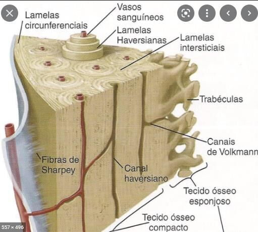
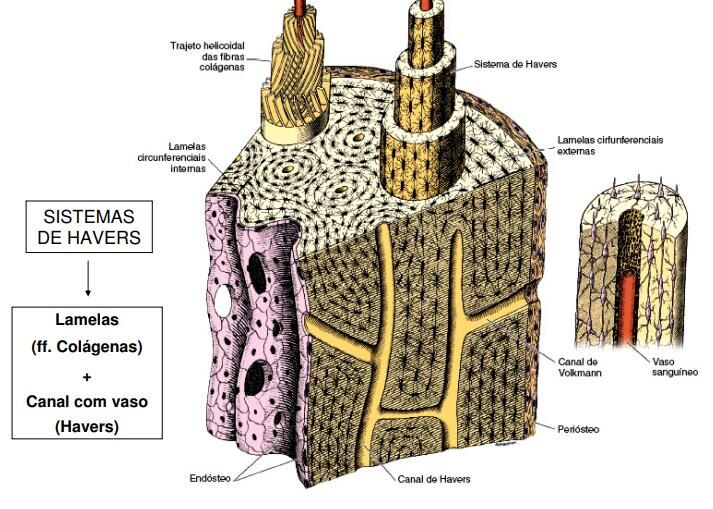
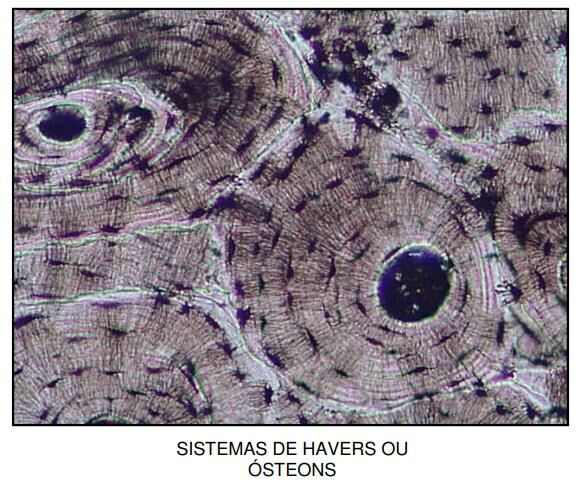
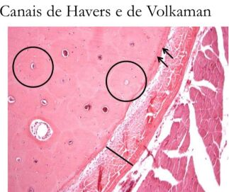
Havers = Horizontal ao eixo, quer dizer, ao longo do osso (longitudinal). Volkmann = Vai de um lado ao outro (transversal, perfurante).
2.7Ossificação: como o osso nasce
Todo osso começa como osso primário e depois vira secundário. O que muda é o molde: uma membrana conjuntiva ou uma cartilagem.
| Intramembranosa | Endocondral | |
|---|---|---|
| Molde | Membrana de tecido conjuntivo (mesênquima) | Cartilagem hialina preexistente |
| Ossos | Ossos chatos do crânio: frontal, parietal, parte do occipital, maxila e mandíbula. Também o crescimento em espessura dos longos e os ossos curtos | Ossos longos e irregulares: membros, base do crânio, coluna vertebral, pelve |
| Quando | Vida fetal; a calota craniana começa como camada membranosa | Desenvolvimento e crescimento em comprimento (disco epifisário) |
Intramembranosa, passo a passo
- Células mesenquimaisse diferenciam em osteoblastos dentro da membrana conjuntiva.
- Osteoblastossintetizam matriz ainda não mineralizada (osteoide).
- Mineralizaçãoa matriz calcifica; os osteoblastos ficam presos e viram osteócitos, com seus canalículos.
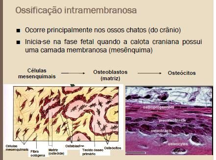
Endocondral, passo a passo
- Condrócitos hipertrofiame morrem no centro da diáfise, iniciando a calcificação da cartilagem.
- Vasos invademvindos do periósteo, e trazem células osteoprogenitoras para a cavidade.
- Centro de ossificaçãoaparece tecido ósseo no centro da diáfise; a cavidade vai originar a medula.
- Disco epifisárioa cartilagem fica restrita à metáfise. A partir dela o osso continua crescendo em comprimento.
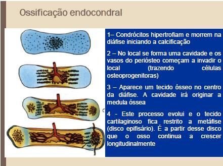
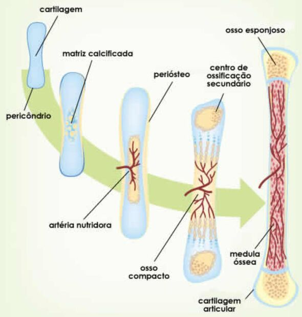
O disco epifisário (placa de crescimento)
É uma placa de cartilagem hialina entre a epífise e a diáfise, responsável pelo crescimento do osso em comprimento. Quando o crescimento acaba, ela é substituída por osso e vira a linha epifisária. Lida da epífise para a diáfise, tem cinco zonas:
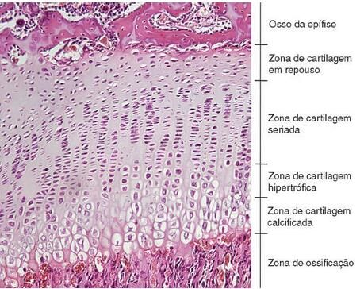
- 1Repouso: cartilagem hialina comum
- 2Seriada (proliferação): condrócitos em pilhas
- 3Hipertrófica: condrócitos grandes
- 4Cartilagem calcificada: condrócitos morrem
- 5Ossificação: osteoblastos depositam osso
“Rapaz Sempre Hesita, Calcula e Ousa”: Repouso, Seriada, Hipertrófica, Calcificada, Ossificação.
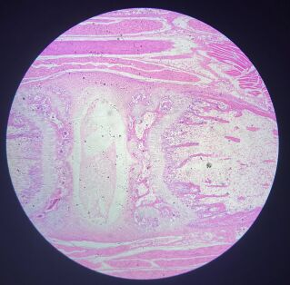
Excesso de cálcio na dieta de filhotes de raças grandes atrapalha a ossificação endocondral no disco epifisário e causa deformidades de crescimento. Por isso a suplementação sem orientação é perigosa.
2.8O que acontece depois de uma fratura
Um processo complexo e regulado, em duas fases: inflamatória e de reparo.
- Hematoma e inflamaçãoForma-se um coágulo que age como “tampão” temporário. Leucócitos, mastócitos e macrófagos limpam os detritos e iniciam o reparo.
- Calo ósseoFibroblastos (fibras colágenas) e condroblastos (cartilagem) formam um calo que dá estabilidade temporária.
- Osso novoOsteoblastos, vindos principalmente do periósteo, depositam matriz que se mineraliza com cálcio e fosfato: osso primário.
- RemodelaçãoAo longo do tempo o osso é reorganizado e o primário é trocado por secundário, restaurando a estrutura normal.
Nas suas anotações, ao lado de “macrófagos” está escrito “osteoclasto”. Na fase inflamatória quem limpa os detritos são os macrófagos. Os osteoclastos entram depois, na remodelação, para reabsorver o osso excedente do calo.
Desequilíbrio em que a atividade dos osteoclastos supera a dos osteoblastos: reabsorve-se mais osso do que se forma, e o osso fica poroso e frágil.
2.9Tudo junto: a lâmina de osso
Estas são as fotos da sua aula prática (lâmina de osso vertebral/joelho). Use o botão para esconder a legenda e tente identificar cada letra.
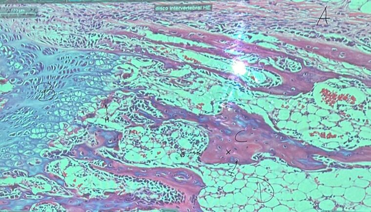
- APeriósteo (tecido conjuntivo denso)
- BDisco epifisário (cartilagem)
- CTecido ósseo esponjoso
- DTecido hematopoético + adiposo (medula)
- XMatriz óssea
- G / HOsteoblastos
- IOsteoclasto
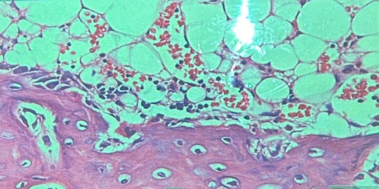
- 1Tecido hematopoético (células do sangue em formação)
- 2Tecido adiposo (células grandes e vazias)
- 3Osteócito, dentro da lacuna
- 4Osteoblasto, na borda da trabécula
- 5Medula óssea
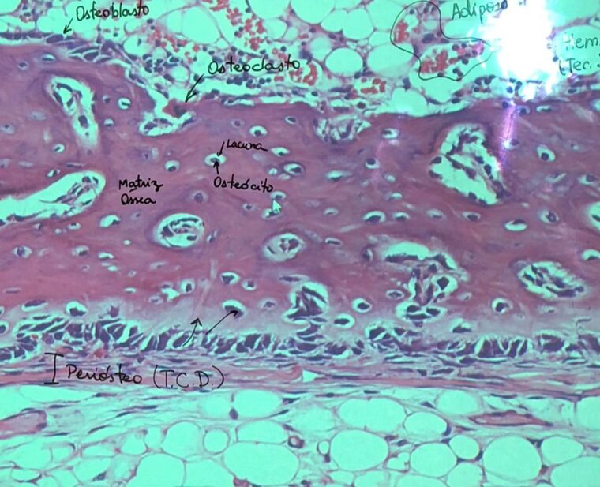
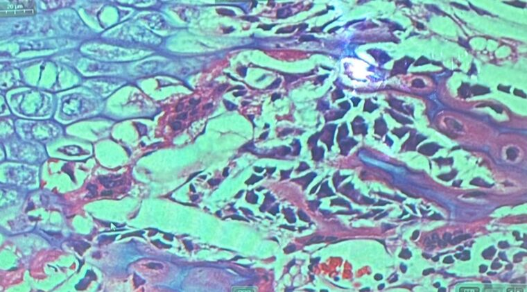
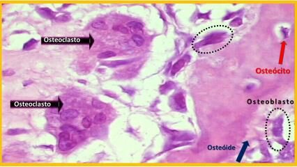
Tireoide e paratireoide: o termostato do cálcio
A calcitonina (tireoide) tira cálcio do sangue e põe no osso; o paratormônio (paratireoide) faz o contrário. O osso é o cofre, as duas glândulas são as chaves.
Na lâmina você precisa identificar
- Glândula tireoide, folículos tireoidianos, coloide, células foliculares, células parafoliculares.
- Glândula paratireoide e células principais.
- A função de cada componente.
3.1Tireoide: glândula folicular
A tireoide é chamada de glândula folicular porque suas unidades são esferas ocas, os folículos tireoidianos, que no corte aparecem como estruturas ovais.
Células foliculares
Epitélio simples (cúbico) que forma a parede do folículo. Produzem os hormônios T3 e T4 (a partir da tireoglobulina) e os guardam dentro do folículo.
Coloide
O “gel rosa” (acidófilo) que preenche o folículo. Produzido pelas células foliculares, armazena T3 e T4.
Células parafoliculares (C)
Células claras, maiores, entre os folículos. Produzem calcitonina.
3.2Paratireoide: glândula cordonal
A paratireoide é cordonal: suas células se arranjam em cordões, uma em sequência da outra, como um “colar de pérolas”. Cora em roxo (basófila), contrastando com o rosa da tireoide. A população principal são as células principais, que produzem o paratormônio (PTH).
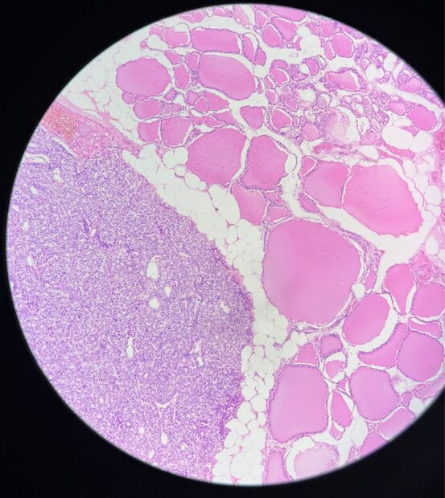
- EsquerdaParatireoide: massa roxa compacta, sem folículos
- DireitaTireoide: folículos com coloide rosa
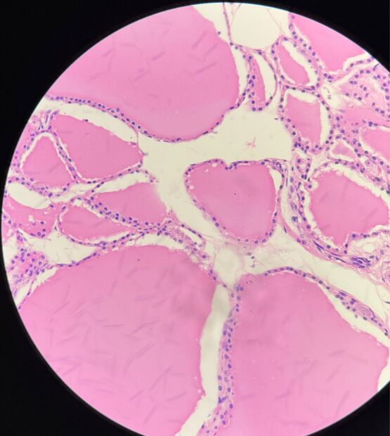
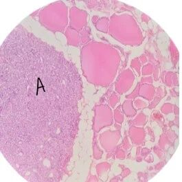
3.3O controle do cálcio
Cálcio ALTO no sangue
- Células parafoliculares da tireoide liberam calcitonina.
- A calcitonina inibe o osteoclasto (e favorece o osteoblasto).
- O cálcio sai do sangue e é guardado na matriz óssea.
Cálcio BAIXO no sangue
- Células principais da paratireoide liberam paratormônio (PTH).
- O PTH estimula a reabsorção óssea pelos osteoclastos.
- O cálcio sai da matriz óssea e vai para o sangue.
CalciTONina “TONifica” o osso (põe cálcio nele). PARAtormônio “PARA de guardar” e manda o cálcio de volta ao sangue.
Em um resumo aparece “células paratireoides → calcitonina”. Errado. Calcitonina vem das células parafoliculares da tireoide. A paratireoide produz PTH. Os nomes “parafolicular” e “paratireoide” são parecidos de propósito na prova.
Tireoide = acidófila (rosa, por causa do coloide). Paratireoide = basófila (roxa, células densas em cordões).
Tecido cartilaginoso: hialina, elástica e fibrosa
Cartilagem é tecido conjuntivo especial com muita matriz e poucas células; o tipo de fibra na matriz decide se ela é hialina (colágeno II), elástica (+ fibras elásticas) ou fibrosa (feixes de colágeno I).
Você precisa saber
- Componentes: condroblastos, condrócitos, matriz, pericôndrio, grupo isógeno.
- Classificar o pericôndrio como tecido.
- Os 3 tipos: características, pericôndrio sim/não, localização.
- Classificar a cartilagem da orelha, da traqueia e do disco intervertebral.
4.1Componentes
O tecido cartilaginoso é um tecido conjuntivo do tipo especial formado por células e por matriz extracelular em abundância. Essa combinação dá flexibilidade e resistência. Não tem vasos: as células se nutrem por difusão a partir do pericôndrio.
Condroblasto
Produz a matriz extracelular (colágeno e proteoglicanos), que dá força, suporte e forma à cartilagem em desenvolvimento. Fica na borda, junto ao pericôndrio; é mais achatado.
Condrócito
Condroblasto que ficou preso na matriz que fabricou. Mora numa lacuna e mantém o tecido. É arredondado.
Grupo isógeno
Grupinho de 2 a 8 condrócitos dentro de uma mesma área, todos originados de uma única célula por mitose.
Pericôndrio
Tecido conjuntivo denso que envolve a cartilagem. Camada externa fibrosa, interna condrogênica (fabrica condroblastos). Se tem pericôndrio, tem condroblastos.
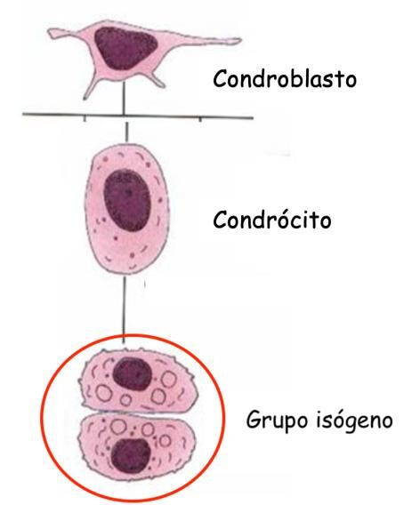
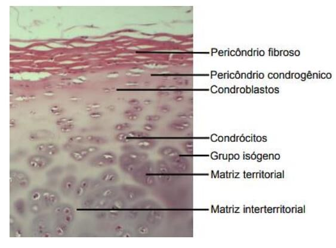
Matriz territorial é a faixa mais escura (basófila) colada ao grupo isógeno. Matriz interterritorial é o restante, mais claro, entre os grupos.
4.2Os três tipos
| Tipo | Matriz e células | Pericôndrio | Onde está |
|---|---|---|---|
| Hialina a mais comum | Colágeno tipo II; matriz basófila e homogênea (“vidro”); condrócitos em grupos isógenos | Presente na maioria. Ausente na cartilagem articular e no disco epifisário | Superfícies articulares, nariz, laringe, traqueia, brônquios, extremidade ventral das costelas, disco epifisário, molde do esqueleto fetal |
| Elástica | Colágeno tipo II + fibras elásticas na matriz | Presente | Pavilhão da orelha, conduto auditivo, tuba auditiva, epiglote, partes da laringe |
| Fibrosa fibrocartilagem | Feixes espessos de colágeno tipo I (com algum tipo II); matriz acidófila; condrócitos em fileiras entre as fibras | Ausente | Discos intervertebrais, meniscos e discos articulares, sínfise púbica, inserção de alguns tendões |
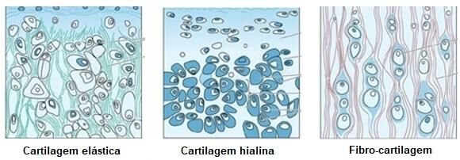
Nas anotações, a elástica aparece com “colágeno tipo 1”. O correto é colágeno tipo II + fibras elásticas. Quem tem colágeno tipo I abundante é a fibrosa, e é exatamente isso que a deixa mais resistente à tração. Regra rápida: só a fibrosa tem colágeno I em destaque.
- Hialina = deslizar e moldar (articulações, traqueia aberta).
- Elástica = dobrar e voltar (orelha, epiglote).
- Fibrosa = aguentar pressão e tração (disco intervertebral, sínfise).
- Pericôndrio: hialina e elástica têm; fibrosa não tem.
4.3As três lâminas da prática
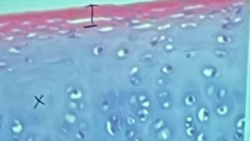
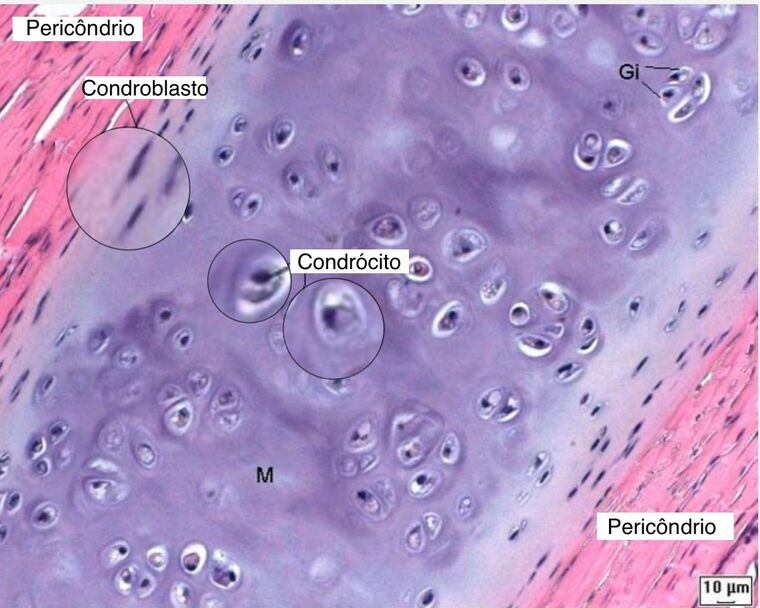
- IPericôndrio (TC denso), rosa, na borda
- ×Matriz cartilaginosa, azulada e lisa
- BordaCondroblastos achatados
- CentroCondrócitos em lacunas, grupos isógenos
- ClassificaçãoCartilagem hialina
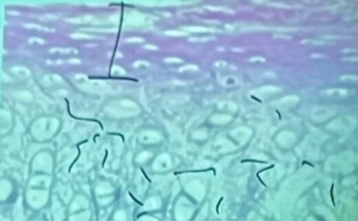
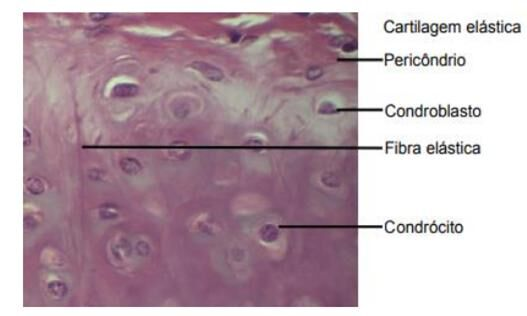
- IPericôndrio (TC denso)
- TraçosFibras elásticas escuras na matriz
- CélulasCondroblastos (borda) e condrócitos
- ClassificaçãoCartilagem elástica
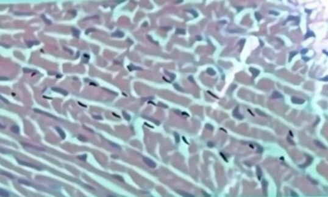
- FaixasFeixes de fibras colágenas, paralelos
- PontosCondrócitos em fileiras entre os feixes
- AusentePericôndrio (não procure!)
- ClassificaçãoCartilagem fibrosa
Na estação do disco intervertebral, o roteiro pede só condrócitos e matriz, sem condroblastos nem pericôndrio. Isso já é uma pista: sem pericôndrio = fibrocartilagem.
Articulações: como os ossos se encontram
Quanto mais “cola” entre os ossos, menos movimento: tecido fibroso trava (sinartrose), cartilagem balança (anfiartrose) e uma cavidade com líquido sinovial libera o movimento (diartrose).
Você precisa saber
- Classificar morfologicamente qualquer articulação do corpo.
- Dar exemplos de sutura (plana, escamosa, serrada), sindesmose, gonfose, sincondrose e sínfise.
- Os componentes de uma articulação sinovial e do joelho.
- Os movimentos, o número de eixos e os tipos de articulação sinovial.
5.1O que é uma articulação
É a junção entre ossos. Serve para conectar o esqueleto, permitir movimentos e absorver choques. A mobilidade varia: imóveis, ligeiramente móveis e livremente móveis. Podem ser classificadas anatomicamente (modo de desenvolvimento, natureza do meio de união, forma das faces) ou fisiologicamente (grau de movimento).
- Sutura — ossos próximos, quase todas na cabeça
- Sindesmose — ossos à distância, unidos por ligamentos ou membranas
- Gonfose — raiz do dente no alvéolo
- Sincondrose — cartilagem hialina, temporária
- Sínfise — cartilagem fibrosa
- Cápsula, cavidade, líquido sinovial, cartilagem articular, ligamentos
- Gínglimo, plana, trocóide, esferóide
Sinartrose = sem movimento. Anfiartrose = movimento “dos dois lados”, só um balanço. Diartrose = movimento de verdade, através da cavidade.
5.2Fibrosas (sinartroses)
Suturas
Os ossos ficam muito próximos, unidos por pouco tecido fibroso. A maioria está na cabeça. Classificam-se pela forma das bordas:
Sindesmoses
Os ossos ficam à distância, unidos por grande quantidade de tecido conjuntivo formando ligamentos ou membranas (fibroso branco e/ou elástico). Com a idade, também tendem a se ossificar. Exemplos: o ligamento interósseo entre rádio e ulna, entre tíbia e fíbula, e entre o metacarpo principal e os rudimentares do equino.
Gonfose
Junção fibrosa entre a raiz do dente e o seu alvéolo.
A gonfose não é uma articulação verdadeira, porque os dentes não fazem parte do esqueleto. A prova pode perguntar exatamente isso.
5.3Cartilaginosas (anfiartroses)
Ligeiramente móveis, com movimento em balanço. Classificam-se pela natureza histológica da cartilagem:
| Sincondrose | Sínfise | |
|---|---|---|
| Cartilagem | Hialina | Fibrosa (fibrocartilagem) |
| Duração | Temporária: a cartilagem vira osso antes da idade adulta, quando cessa o crescimento | Permanente, mas pode ossificar com a idade, reduzindo a mobilidade |
| Exemplos | Disco epifisário (entre epífise e diáfise); sincondroses da base do crânio | Sínfise pélvica (púbica + isquiática); disco intervertebral entre os corpos vertebrais; sínfise mandibular |
5.4Sinoviais (diartroses)
Livremente móveis, com componentes próprios. Use esta lista como roteiro na bancada:
| Componente | O que é |
|---|---|
| Superfície articular | A face do osso que encosta no outro: osso compacto liso |
| Cartilagem articular | Camada fina e lisa de cartilagem hialina que recobre a superfície. Reduz o atrito e, por ser elástica, absorve impactos |
| Cavidade articular | Espaço entre as superfícies, preenchido por líquido e fechado pela cápsula |
| Líquido sinovial | Lubrificante transparente e viscoso; dialisado do plasma, livre de proteínas, que nutre e lubrifica as estruturas internas. A punção serve para diagnóstico |
| Cápsula articular | Multicamadas. Externa: tecido fibroso. Interna: membrana sinovial, que produz o líquido |
| Ligamentos | Tecido conjuntivo fibroso, dentro e ao redor da articulação. Ligam osso a osso e dão estabilidade |
| Meniscos | Cartilagens de apoio (fibrocartilagem) no joelho: lateral e medial |
Ligamento une osso com osso. Tendão une músculo com osso. O “ligamento patelar” é, na verdade, a continuação do tendão do quadríceps depois da patela, por isso a conferência fala em “1 tendão”.
O joelho (articulação femorotibiopatelar)
Tendão / ligamento patelar
Liga a patela à tuberosidade da tíbia.
Lateral e medial
Estabilidade lateral (lado a lado).
Cranial e caudal
Estabilidade craniocaudal (frente e trás). Cruzam-se em “X” dentro da articulação.
Lateral e medial
Fibrocartilagens em “C” que encaixam os côndilos do fêmur na tíbia.
A ruptura do ligamento cruzado cranial é uma das causas mais comuns de claudicação do membro pélvico em cães. O teste de “gaveta” avalia justamente a estabilidade craniocaudal que ele garante.
5.5Movimentos
| Movimento | Definição |
|---|---|
| Flexão | Diminui o ângulo entre os ossos |
| Extensão | Aumenta o ângulo entre os ossos |
| Adução | Extremidade vai em direção ao plano mediano |
| Abdução | Extremidade se afasta do plano mediano |
| Rotação | Torção no próprio eixo |
| Circundução | Extremidade distal desenha um círculo (combinação de todos) |
Abdução = duas pernas abrindo (afasta). Adução = adicionar ao corpo (aproxima).
5.6Eixos e tipos de articulação sinovial
| Eixos | Movimentos permitidos | Exemplo |
|---|---|---|
| Monoaxial | Só flexão e extensão (um eixo, um plano) | Maioria das articulações dos membros |
| Biaxial | Flexão, extensão, adução e abdução | Articulação temporomandibular (ATM) |
| Triaxial | Todos, incluindo rotação e circundução | Articulação do quadril (coxofemoral) |
Uma superfície gira em torno da outra
Flexão e extensão. Ex.: cotovelo.
Superfícies planas
Balanço e deslizamento. Ex.: articulações do carpo.
Um osso rotaciona sobre o outro
Ex.: atlantoaxial (entre atlas e áxis), a articulação do “NÃO” com a cabeça.
Cabeça em cavidade côncava
Multiaxial: os movimentos mais amplos. Ex.: ombro e quadril.
O trocóide é um tipo raro: a conferência destaca que há apenas uma de destaque no organismo, a atlantoaxial. Se a alternativa disser “cotovelo é trocóide” ou “quadril é gínglimo”, está errada.
Esqueleto axial: crânio, coluna, costelas e esterno
O crânio é um quebra-cabeça de ossos fundidos com uma única articulação móvel (a ATM); a coluna é uma fila de vértebras que mudam de forma conforme a região.
6.1A cabeça
Conjunto de ossos e articulações que abriga órgãos dos sentidos e o início dos sistemas respiratório e digestório. É formada pelo crânio e pela mandíbula. Os ossos do crânio são quase todos fundidos por suturas; a única articulação realmente móvel é a da mandíbula com o osso temporal (ATM).
Formam cavidades
Craniana (encefálica), que guarda o encéfalo, e as órbitas.
Formam cavidades
Nasal e oral.
Os ossos, um a um
| Osso | Onde fica e o que tem |
|---|---|
| Occipital | Parte caudal do crânio. Forame magno (abertura natural por onde passa a medula espinhal); côndilos occipitais (de cada lado do forame, articulam com o atlas); processo jugular / paracondilar (lateral e paralelo ao côndilo) |
| Esfenoide | Na base do crânio, por dentro. Basisfenoide e pré-esfenoide; fossa hipofisária, onde fica a hipófise |
| Etmoide | Dentro da cavidade nasal, faz a divisão com a cavidade craniana. Forma as conchas nasais (ossos: dorsal, média, ventral), que delimitam os meatos nasais (espaços: dorsal, médio, ventral) |
| Interparietal | Pequeno osso entre os parietais |
| Vômer | Parte ventral do septo nasal; divide as coanas |
| Parietais | Teto da calota craniana; unidos por sutura. Maiores no equino que no bovino |
| Frontais | Acima dos olhos. Seios frontais (onde a secreção acumula na sinusite); processo zigomático do frontal; forame supraorbitário; suturas |
| Temporais | Parede lateral da calota. Partes escamosa, timpânica (bula timpânica) e petrosa. Processo zigomático do temporal (forma o arco zigomático). Tubérculo articular: onde o côndilo da mandíbula se articula (ATM) |
| Maxilas | Dentes pré-molares e molares superiores; crista facial; forame infraorbitário; espaço interalveolar (diastema); processo palatino (palato duro) |
| Incisivos | Ponta do focinho. Dentes incisivos superiores; canal interincisivo; fissura nasoincisiva (encontro do nasal com o incisivo) |
| Palatinos | Parte caudal do palato duro; borda cranial das coanas |
| Pterigoides | Pequenos, com extremidade ventral livre, perto das coanas |
| Zigomáticos | Unem-se ao temporal para formar o arco zigomático; a crista facial começa na maxila e continua no zigomático |
| Nasais | Teto da cavidade nasal |
| Lacrimais | Borda medial da órbita; canal lacrimal (ducto nasolacrimal) |
| Mandíbula | Dentes inferiores; corpo; ramo vertical; processos condilar e coronoide; incisura mandibular; forames mandibular e mentoniano; sínfise mandibular (mentoniana); alvéolos; diastema |
Conchas = ossos. Meatos = espaços entre as conchas. O etmoide fornece as conchas; o ar passa pelos meatos.
Acidentes ósseos do crânio: onde procurar
| Acidente | Osso | Dica para achar |
|---|---|---|
| Forame magno | Occipital | O maior buraco, na face caudal |
| Côndilos do occipital | Occipital | Dois “rins” lisos ladeando o forame magno |
| Processo jugular / paracondilar | Occipital | Ponta que desce lateral aos côndilos (enorme no equino) |
| Bula timpânica | Temporal | Bolha óssea na face ventral, perto do ouvido |
| Canal interincisivo | Incisivo | Fenda na linha média, atrás dos dentes incisivos (vista ventral) |
| Coanas | Palatino / vômer | Aberturas caudais da cavidade nasal (vista ventral), divididas pelo vômer |
| Crista facial | Maxila → zigomático | Relevo horizontal na face lateral, acima dos molares (equino) |
| Forame infraorbitário | Maxila | Orifício na face lateral, rostral à crista facial |
| Forame supraorbitário | Frontal | Orifício acima da órbita |
| Arco zigomático | Temporal + zigomático | “Ponte” lateral abaixo da órbita |
| Sínfise mentual (mentoniana) | Mandíbula | Onde as duas metades da mandíbula se juntam, na frente |
| Corpo / ramo vertical | Mandíbula | Corpo = horizontal, com dentes; ramo = parte que sobe |
| Processo coronoide | Mandíbula | Ponta mais alta do ramo, rostral |
| Processo condilar | Mandíbula | Ponta caudal arredondada, articula com o temporal |
| Incisura mandibular | Mandíbula | O “vale” entre os processos coronoide e condilar |
| Forame mandibular | Mandíbula | Face medial do ramo |
| Forame mentoniano | Mandíbula | Face lateral do corpo, perto da frente |
| Alvéolos dentários | Maxila, incisivo, mandíbula | As “caixinhas” onde os dentes se encaixam |
Tipos de crânio no cão
Dolicocefálico
Borzoi, Collie, Saluki, Galgo.
Mesocefálico
Pastor Alemão, Rottweiler, vira-lata típico.
Braquicefálico
Pug, Boxer, Shih Tzu, Buldogue.
“Os ossos são iguais, difere o comprimento deles.” Todos os cães têm os mesmos ossos no crânio; o que muda é a proporção. O cão é a espécie com maior variação de crânio.
6.2Coluna vertebral
A coluna protege a medula espinhal. Os forames vertebrais de todas as vértebras, em sequência, formam o canal vertebral. Entre uma vértebra e outra fica o disco intervertebral, e pelos espaços laterais saem os nervos espinhais.
A vértebra típica
| Estrutura | O que é |
|---|---|
| Corpo | Parte ventral, maciça, cilíndrica; apoia o peso e se liga ao disco |
| Arco vertebral | Anel dorsal que fecha o forame vertebral |
| Forame vertebral | Buraco central por onde passa a medula; somados, formam o canal vertebral |
| Processo espinhoso | Projeção dorsal única; é maior na região da cernelha (primeiras torácicas) |
| Processos transversos | Projeções laterais (um de cada lado) |
| Processos articulares craniais e caudais | “Dobradinhas” que encaixam uma vértebra na seguinte |
Como reconhecer cada região
| Vértebra | Marca registrada |
|---|---|
| Atlas (C1) | Formato de “asa” ou anel; sem corpo e sem processo espinhoso. Forame alar, forame vertebral lateral, forame transverso (presente no equino); fóvea do dente (onde encaixa o dente do áxis) |
| Áxis (C2) | A mais longa. Dente (processo odontoide) projetado cranialmente; processo espinhoso grande, em forma de crista |
| Cervical típica (C3–C7) | Forame transverso na base do processo transverso (passa a artéria vertebral); processos articulares grandes |
| Torácica | Fóveas costais cranial e caudal no corpo (articulam com a cabeça da costela); fóvea para o tubérculo da costela no processo transverso; processo espinhoso longo. A última não tem fóvea costal caudal |
| Lombar | Processos transversos longos e achatados, como “asas”; processo espinhoso parecido com o das últimas torácicas |
| Sacro | Vértebras fundidas em um bloco, entre as asas dos ílios. Forames sacrais dorsais e ventrais; face auricular (articula com o ílio); asas do sacro |
| Caudais | Diminuem gradativamente; as últimas são cilindros sem forame vertebral |
- Forame alar e forame vertebral lateral = atlas. Dente = áxis. Fóvea do dente = atlas (é onde o dente encaixa).
- Forame transverso = cervicais. Fóveas costais = torácicas. Forames sacrais = sacro.
- Pelos forames sacrais dorsais saem os ramos dorsais dos nervos sacrais; pelos ventrais, os ramos ventrais.
- A articulação atlas–áxis é o exemplo de trocóide (cap. 5).
6.3Costelas e esterno (tórax)
4 partes
Cabeça (com facetas, articula com as fóveas costais dos corpos vertebrais), colo, tubérculo (com faceta, articula com o processo transverso) e corpo (a parte longa e curva). O número de pares acompanha o de torácicas: equino 18, bovino 13, cão 13.
Esternebras
Osso formado por segmentos, as esternebras, em três regiões: manúbrio (cranial, a “frente”), corpo (meio) e processo xifoide (último, caudal).
A costela se prende à coluna em dois pontos: a cabeça no corpo vertebral (fóveas costais) e o tubérculo no processo transverso. Cabeça → corpo; tubérculo → transverso.
Membro torácico: da escápula às falanges
Escápula → úmero → rádio e ulna → carpo → metacarpo → falanges. Em cada osso, procure a cabeça (articula), os tubérculos (prendem músculos) e as fossas (encaixam o vizinho).
Cíngulo escapular (escápula) → braço (úmero) → antebraço (rádio + ulna) → mão: carpo, metacarpo e dedos (falanges proximal, média e distal + sesamoides).
7.1Escápula (osso plano)
| Face | Estruturas |
|---|---|
| Lateral | Espinha da escápula (a crista que divide a face); acrômio (ponta distal da espinha); fossa supraespinhal (cranial à espinha); fossa infraespinhal (caudal à espinha) |
| Medial (costal) | Área serrátil (dorsal, rugosa, prende o músculo serrátil); fossa subescapular |
| Distal | Cavidade glenoide (onde o úmero se articula); tubérculo supraglenoidal; processo coracoide (pequeno, medial ao tubérculo) |
“Toda escápula é parecida, mas é única para cada espécie. Não muda a posição, muda as características.” Para saber o lado: a cavidade glenoide fica para baixo, a espinha fica na face lateral, e o tubérculo supraglenoidal aponta para a frente (cranial).
No equino a espinha não termina em acrômio (ele praticamente não existe) e tem um tubérculo da espinha no meio. No cão e no bovino o acrômio é evidente.
7.2Úmero (osso longo)
| Região | Estruturas |
|---|---|
| Proximal | Cabeça (lisa, caudal, articula com a cavidade glenoide); colo; tubérculo maior (lateral; no equino há também um tubérculo intermédio); tubérculo menor (medial); sulco(s) intertubercular(es), por onde passa o tendão do bíceps (no equino são dois sulcos, por causa do tubérculo intermédio) |
| Diáfise | Tuberosidade deltoide (lateral, rugosa); tuberosidade redonda maior (medial) |
| Distal | Côndilos lateral e medial (capítulo e tróclea); fossa do olécrano (caudal, funda; recebe o processo ancôneo); fossa radial (cranial); epicôndilos lateral e medial (inserção dos ligamentos colaterais) |
A fossa do olécrano é a cova funda na face caudal; a fossa radial é rasa, na face cranial. Achou a cova funda? Você está olhando por trás.
7.3Rádio e ulna (antebraço)
| Estrutura | Osso | O que é |
|---|---|---|
| Tuberosidade do olécrano | Ulna | A “ponta do cotovelo”; prende o tríceps |
| Incisura troclear | Ulna | Meia-lua que abraça a tróclea do úmero |
| Processo ancôneo | Ulna | Bico no topo da incisura; encaixa na fossa do olécrano |
| Processo estiloide medial | Rádio | Ponta distal medial |
| Processo estiloide lateral | Ulna | Ponta distal lateral |
| Espaço interósseo | Entre os dois | Fresta entre rádio e ulna (ocupada por ligamento: sindesmose) |
A ulna é completa no bovino e no carnívoro (vai até embaixo). No equino ela vai só até o meio e se funde ao rádio. A ulna é o ponto de guia lateral.
7.4Mão: carpo, metacarpo e dedos
Carpo (ossos curtos, em duas fileiras)
| Fileira | Ossos (de medial para lateral) | Articula com |
|---|---|---|
| Proximal | Carpo radial, intermédio, ulnar e acessório (projeta-se para trás, palmar) | Rádio e ulna |
| Distal | 1º, 2º, 3º e 4º ossos do carpo | Metacarpos |
No cão, o carpo radial e o intermédio são fundidos num osso só (intermediorradial). Por isso a peça do cão parece ter um osso a menos na fileira proximal.
Metacarpo e dedos
| Espécie | Metacarpos | Dedos |
|---|---|---|
| Equino (ungulado, 1 dedo) | III principal (a “canela”) + II e IV rudimentares (finos, laterais) | 1 dedo (III): 3 falanges + 3 sesamoides (2 proximais + 1 distal, o navicular) |
| Bovino (biungulado) | III e IV fundidos num osso só | 2 dedos principais (III e IV) + 2 acessórios |
| Suíno | 4: II, III, IV, V | 4 dedos (III e IV apoiam) |
| Cão | 5: I a V | 5 dedos (o I é o “ergô”, não apoia) |
Cada dedo tem falange proximal, falange média e falange distal. Os sesamoides ficam “entre” os ossos, dentro de tendões: os proximais atrás da articulação metacarpofalângica e o distal atrás da articulação entre a falange média e a distal.
Membro pélvico: da pelve às falanges
Pelve → fêmur → patela → tíbia e fíbula → tarso → metatarso → falanges. A lógica é a mesma do membro torácico, mas o cíngulo pélvico é preso ao sacro e o tarso tem três fileiras.
| Segmento | Ossos | Região (nome popular) |
|---|---|---|
| Cíngulo pélvico | Coxal (ílio, ísquio, púbis) + sacro + primeiras caudais | Garupa |
| Coxa | Fêmur e patela | Coxa; joelho anatômico = soldra |
| Perna | Tíbia (maior) e fíbula (menor) | Perna |
| Pé | Tarso, metatarso e dedos | Jarrete (tarso), canela (metatarso), boleto (articulação metatarsofalângica), quartela (falange proximal) |
8.1Pelve (osso coxal)
| Osso | Estruturas |
|---|---|
| Pelve como um todo | Acetábulo (cavidade acetabular, onde a cabeça do fêmur se conecta; ponto de encontro dos três ossos); forame obturado (grande buraco ventral); sínfise pélvica = sínfise púbica + sínfise isquiática |
| Ílio (cranial) | 1 corpo; 2 asa; 3 tuberosidade coxal (lateral: a “ponta do quadril”); 4 tuberosidade sacral (medial, perto do sacro); 5 crista ilíaca (borda cranial) |
| Ísquio (caudal) | 1 tábua do ísquio (placa plana); 2 tuberosidade isquiática (a “ponta da nádega”); 3 arco isquiático (chanfradura caudal entre os dois ísquios) |
| Púbis (ventral, medial) | Fica por dentro da cavidade; a borda é palpável na palpação retal (grandes animais) |
Ílio = Início (cranial, com as asas). Ísquio = Saída (caudal, onde o animal senta). Púbis = no Piso, no meio.
8.2Fêmur
Regra das suas anotações: tudo o que está do lado da cabeça é medial. A cabeça aponta para dentro, para o acetábulo.
| Região | Estruturas |
|---|---|
| Epífise proximal | Cabeça femoral (medial); fóvea da cabeça (depressão onde se prende o ligamento da cabeça do fêmur); colo; trocânter maior (lateral, o mais alto); trocânter menor (medial, na face caudal); incisura trocantérica |
| Diáfise | Terceiro trocânter (lateral; marcante no equino); fossa supracondilar (caudal, acima dos côndilos) |
| Epífise distal | Tróclea (lábios medial e lateral, cranial: onde desliza a patela); côndilos medial e lateral (caudais: articulam com a tíbia); epicôndilos medial e lateral; fossa intercondilar (entre os côndilos, onde ficam os ligamentos cruzados) |
Tróclea = face cranial, articula com a patela. Côndilos = face caudal, articulam com a tíbia. Não confunda os dois.
Patela
Grande sesamoide no tendão do quadríceps. “Segura” o fêmur e dá firmeza à articulação, deslizando sobre a tróclea.
8.3Tíbia e fíbula (perna)
| Estrutura | O que é |
|---|---|
| Platô tibial | Face proximal que articula com os côndilos do fêmur |
| Côndilos medial e lateral | As duas metades do platô |
| Eminência intercondilar (medial e lateral) | Saliência no meio do platô, entre os côndilos |
| Tuberosidade da tíbia | Relevo cranial onde se insere o ligamento patelar |
| Maléolo medial | Ponta distal medial da tíbia |
| Maléolo lateral | Tibial no equino e no bovino (a fíbula é reduzida e fundida); fibular no cão e no suíno (fíbula completa) |
8.4Pé: tarso, metatarso e dedos
O tarso é maior e mais complexo que o carpo, organizado em três fileiras:
| Fileira | Ossos |
|---|---|
| 1ª (proximal) | Tálus (medial, com tróclea para a tíbia) e calcâneo (lateral, longo, forma a “ponta do jarrete”) |
| 2ª | Tarso central |
| 3ª (distal) | 1º, 2º, 3º e 4º tarsianos |
Metatarso: segue o mesmo padrão do metacarpo de cada espécie (equino: III + rudimentares II e IV; bovino: III e IV fundidos; cão: II a V, o I geralmente ausente ou vestigial). Dedos: sesamoides proximais, falange proximal, falange média, sesamoide distal e falange distal.
Sesamoides ficam entre uma falange e outra (na face palmar/plantar das articulações), dentro de tendões.
8.5Comparativo final: torácico × pélvico
| Torácico | Pélvico | Equivalência |
|---|---|---|
| Escápula | Coxal (ílio, ísquio, púbis) | Cíngulos |
| Úmero | Fêmur (+ patela) | Osso do braço / coxa |
| Rádio e ulna | Tíbia e fíbula | Antebraço / perna |
| Cotovelo: olécrano | Joelho: patela | Ponto de alavanca do extensor |
| Carpo: 2 fileiras | Tarso: 3 fileiras | Ossos curtos |
| Carpo acessório | Calcâneo | Osso que se projeta para trás |
| Metacarpo | Metatarso | Ossos longos da “canela” |
Bancada: checklist das estações
Cada item abaixo é exatamente o que o roteiro manda identificar. Marque só quando conseguir apontar na peça ou na lâmina sem olhar a resposta.
Histo · ALâmina: osso vertebral
Histo · ALâmina: osso do joelho
Histo · BLâmina: tireoide e paratireoide
Histo · A B CLâminas: orelha, traqueia, disco intervertebral
Prática 5Membro torácico
Prática 6Membro pélvico
Prática 7Crânio e esqueleto axial
Prática 8Morfologia articular
Itens marcados: 0 de 49.
Flashcards
Leia a pergunta, responda em voz alta e só então vire o cartão. Use “Errei” para mandar o cartão para o fim da fila.
Simulado com nota
As questões são sorteadas de um banco com todos os capítulos. Responda tudo e clique em Corrigir. Cada novo simulado sorteia outras questões e outra ordem de alternativas.